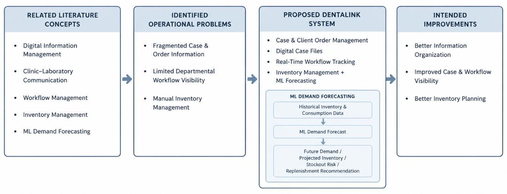
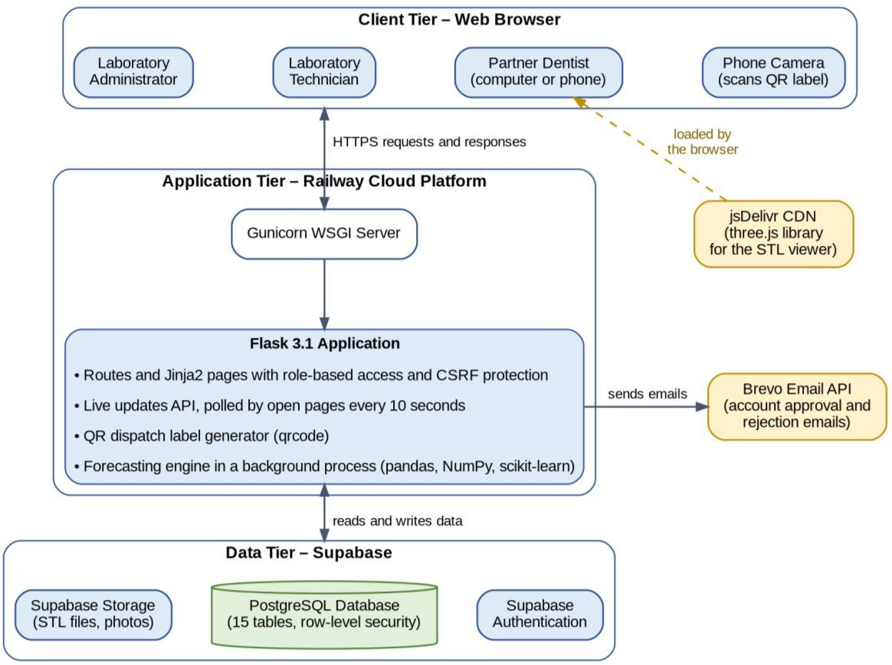
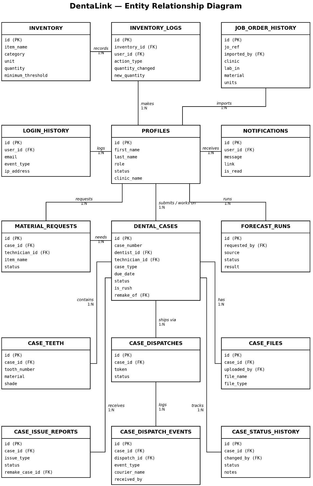
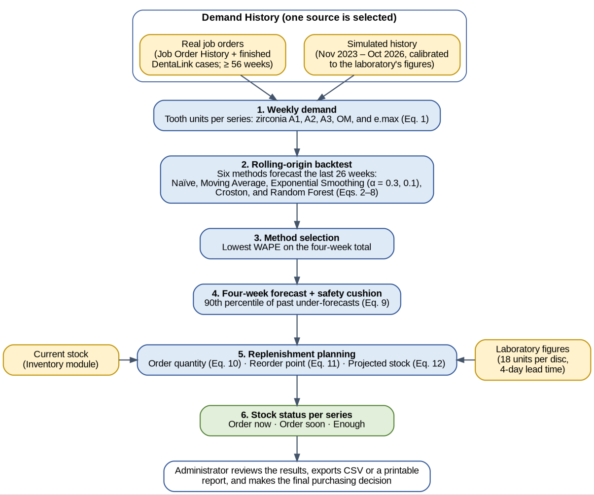
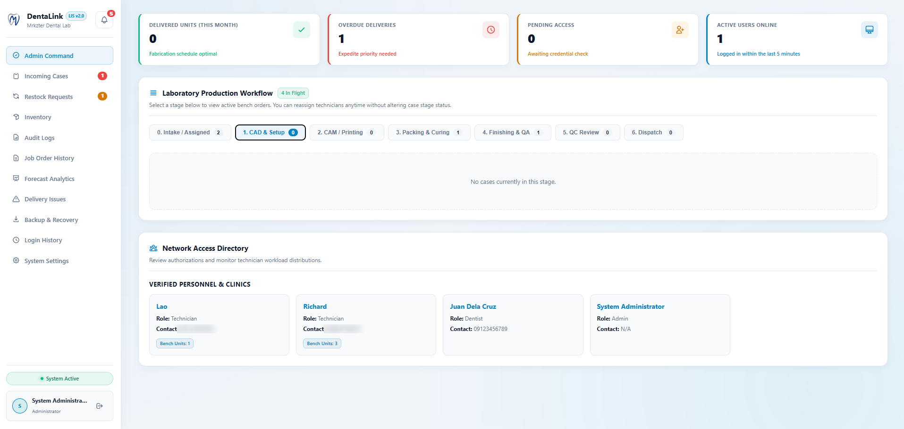
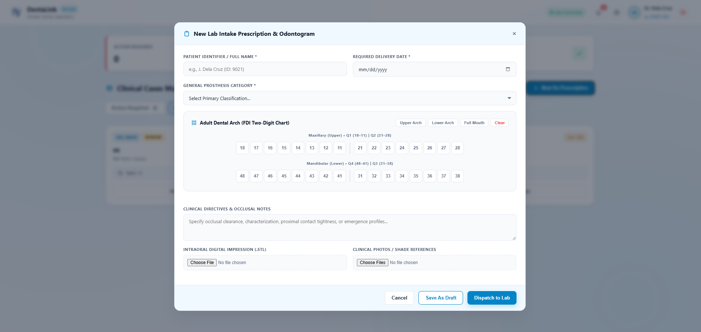
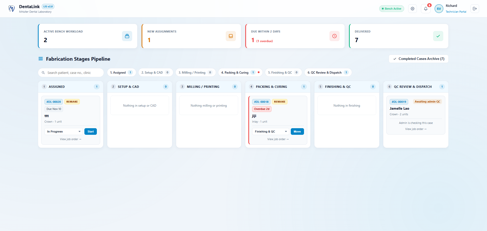
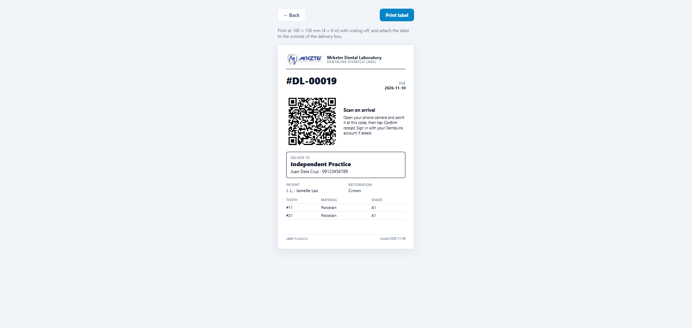
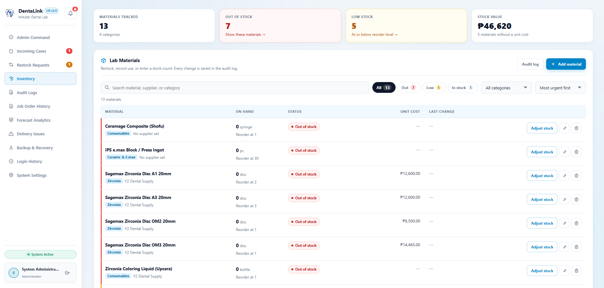
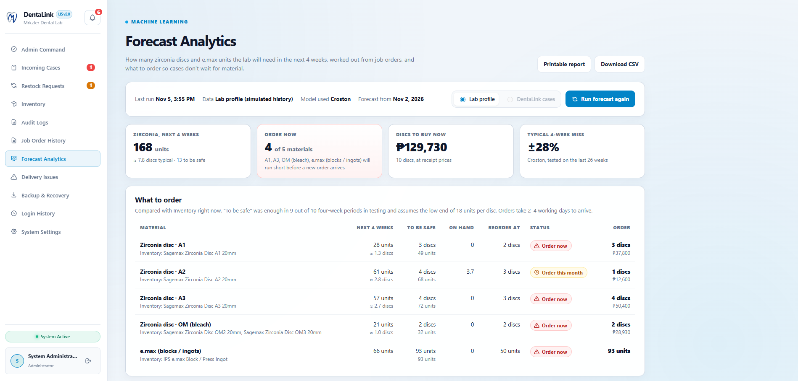

Team Members & Adviser
Bachelor of Science in Information Technology, major in Web and Mobile Application Development.
Jamelle Ivan C. Lao
Researcher / Developer
Shiella Mae B. Rico
Researcher / Developer
Cliff Richard R. Veluz
Researcher / Developer
Gener F. Mosico, MSIT
Thesis Adviser
Problem Statement
Mrkzter Dental Laboratory in Marikina City handles many of its activities through separate messaging apps and manual records.
Current situation
- Case communication and files are scattered across Messenger and Viber, making them hard to find as conversations grow.
- Partner clinics send handwritten job orders that staff must read and re-encode, which can lead to errors.
- Case progress through CAD design and porcelain work has no centralized, real-time visibility.
- Finished restorations leave the laboratory with no record of when each case was dispatched or who received it.
- The laboratory keeps no inventory records, so there is no consumption history for estimating future material needs.
Why it matters
The main milling material, Sagemax zirconia discs, is bought by shade from a supplier that delivers in about two to four working days. Running out of a single shade can delay cases until the next delivery. Without workflow, dispatch, and inventory records, the laboratory cannot easily monitor cases, confirm deliveries, or anticipate stock shortages.
DentaLink addresses this by bringing case handling, digital files, workflow tracking, dispatch, and inventory together in one web-based system.
Objectives
General objective: to develop a web-based laboratory information system that improves the management of dental cases, laboratory workflow, client orders, digital case files, and inventory at Mrkzter Dental Laboratory.
Specific objectives
- To design and develop a web-based laboratory information system with the following key features:
- Dental Case and Client Order Management
- Digital Case-File Management
- Real-Time Departmental Workflow Tracking with QR-Enabled Dispatch
- Laboratory Inventory Management
- To develop a machine learning-based inventory forecasting module in terms of:
- Future Material Demand Forecasting
- Future Inventory-Level Forecasting
- Stockout-Risk Prediction
- Replenishment Recommendations
- To assess the functionality of the developed system based on its key features.
- To evaluate the developed system in terms of functionality, usability, and acceptability among its intended users.
Methodology
The study used a descriptive-developmental research design. DentaLink was built using the Agile model, organized into short sprints over six weeks, with each sprint producing a working and testable increment.
Requirements
Interviews with the laboratory owner and staff and observation of the current process, mapping the case workflow from job order to delivery.
Design
System architecture, relational database schema, case statuses, and separate screens for administrators, technicians, and dentists.
Development
Core modules built sprint by sprint in Python Flask, with database changes recorded as migration files.
Testing
Each increment tested by the developers, followed by black-box testing by IT experts for functional completeness.
Deployment
Launched on Railway, with the database, authentication, and file storage on Supabase.
Review
Feedback from the laboratory after each increment used to refine the system.
Evaluation
The system is evaluated for functionality, usability, and acceptability by its intended users: laboratory administrators and technicians (total population sampling) and dentists and staff of partner clinics (convenience sampling, with the number of respondents set using Slovin's formula). Acceptance is measured using the Technology Acceptance Model.
Forecasting approach
Simple benchmarks, Croston's method for intermittent demand, and a Random Forest model are compared through rolling-origin backtesting, and the most accurate method is used to forecast weekly demand for zirconia discs and e.max.
System Features
Separate interfaces for laboratory administrators, technicians, and partner clinic dentists.
📋Case & Client Order Management
Partner clinics submit job orders online, replacing handwritten forms and manual re-encoding.
📁Digital Case-File Management
Scans, photos, and design files are stored with each case instead of scattered across chat apps.
🔄Departmental Workflow Tracking
Real-time status of each case as it moves through CAD design, porcelain work, and quality control.
📦QR-Enabled Dispatch
Each delivery box gets a QR label linked to its case record, logging when it left the laboratory and who received it.
📊Inventory Management
Records of materials, stock levels, and supplier deliveries for zirconia discs and other laboratory materials.
🤖ML-Based Inventory Forecasting
Forecasts weekly material demand, inventory levels, and stockout risk, and recommends order quantities and reorder points.
⚠️Delivery Issues & Remakes
Clinics can report problems with delivered cases, and remakes are tracked back to the original case.
📝Job Order History
Records the laboratory's paper job orders so past work becomes searchable and usable for forecasting.
🔔Dashboards & Notifications
Role-based dashboards and alerts for case updates, dispatch, and low stock.
System Diagrams
Design documentation from the manuscript. Full descriptions are in the system documentation.




Screenshots
Key modules of DentaLink. Click a screenshot to view it full size.






Links
Source code, live system, and documentation.